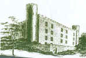

Sally's
great-great-great-great-great-great-great-great Grandparents:
John Edwards ca
1640 - ca 1676
| his parents
& ca 1671 Ann Wright ca 1648 - ? | her parents
& bef 1670 Thomas Griffen - 1670
| his parents
& 1677 William Relison
| his parents
& 1682 James Tullagh
| his parents
of Isle of Wight, Virginia
This is my working hypothesis - the way I see it as of
this moment!!
John Edwards, son of the emigrant Robert Edwards,
was born in Virginia ca 1640. He married ca 1671 Ann
Wright Griffen, the daughter of Thomas Wright
of Isle of Wight, VA and widow of Thomas
Griffen who had died prior to April 9,
1670. John Edwards died before 1 April 1677 when Anne has already married
the third time a William Relison.
Ann Wright married first Thomas Griffen d bef 9
April 1670
Ann married second ca 1671 John Edwards who died ca 1676.
Ann married third 1677 William Relison.
"I, Wm. Body, give to Anne Relison's Eldest Sonne Robert
Edwards, one Brown Cow" 1677. Apl. 1st - W&DB 1-357."
and married the fourth time 1682 James Tullagh.
"James Tullagh acknowledge to have sole unto Luke Kent for
use of Robert Edwards, being his son-in-law [step-son] a cow."
Oct 27 1682 Orpahans Ct WB 2-243.
Children of Thomas Griffen and Ann Wright:
1. Thomas Griffen ca 1667 -
[Chapman
notes that this son must have died early as Anne's son by her 2nd marriage
is referred to as "Eldest sonne" thus indicating a younger son,
but none older B 1-85]
2. child Griffen 1670
Children of John Edwards and Ann Wright:
1. Robert Edwards ca 1672 - 1748
2. John Edwards ca 1674 - ca 1741 Bertie
married Dorcas
3. James Edwards ca 1676 - 1723
Will dated 24 Feb 1723
Prob. 16 July 1723
married Ann
In 1706/7 DB 2 - pages 64 and 65
Robert and James Edwards each buys 100 acres from Thomas Whitley for 2000
pounds of tobacco.
Grandchildren of John Edwards & Ann Wright:
Children of Robert Edwards Sen. ca 1672 -
1748 NC
?1. Margaret Edwards 1699 -
2. Henry Edwards ca 1705 - 1758
married bef 1738 Patience 1709 -
a. Robert Edwards d 1798 I of W
married
Sophia
i.
Robert Edwards d 1817
married 1809 Polly Parkerson
1. Zilla Edwards
married 1831 Levin Parkerson
2. Catherine Edwards
3. Polly Edwards
ii.
Hardy Edwards
iii. John
Edwards
iv.
Samuel Edwards
v.
Lydia Edwards
married 1807 John Parkerson
vi.
Sally Edwards
married 17 Jan 1812 Thomas Smith
vii.
Sophia Edwards
viii.
Parmelia Edwards
married 1812 Lee Sikes
b. Brittian Edwards d 1799
married Christian d bef 1804
i. Jesse Edwards
married 1825 Julia Owens
ii. Patsy Edwards
iii. Levy Edwards
married 1810 Charlotte Norsworthy
iv. Mathew Edwards
married 1808 Charlotte Turner
v. Nancy Edwards
married 1805 Peter Turner
vi. Isaac Edwards d 1814
vii.
Cherry Edwards
married 1813 Armstrong Edwards
?3. Judith Edwards 1710 -
4. William Edwards est 1715 - [will 21 Mar 1794 rec Sept 1795 SH Co VA]
*not the
William of 1751 SH will
married
by 1761 Priscilla Williams
daughter of Arthur Williams [will 1761 SH Co VA] and wife Ann
married bef 1766 2nd Sarah Edwards
a.
James Edwards ca 1762 - ca 1828 SH Co VA
married 22 Dec 1785 Martha Wills
daughter of Matthew Wills
i. Carr Edwards
married 10 Dec 1789 Mary Kindred
ii. Polly Edwards
married 31 July 1806 Henry Vaughan
iii. Allen Edwards ca 1790 - aft 1850
married 4 Aug 1829 Elizabeth Edwards dau of Elias E.
iv. John Edwards 1791 - 10 Aug 1858 of Typhoid Fever
John served in the War of 1812 - He was 5 ft, 8 in, light hair, blue
eyes
and a light complexion - in 1810 he listed himself as a shoemaker.
married 16 Feb 1818 Sarah [Sally]
M Joyner 1797 - 1879 SH Co VA
dau of Jeremiah Joyner of SH Co
1. Boldin Edwards - resid. in Blackjack TN - married twice - large family
2. Lawrence Edwards dy
3. Frances Edwards dy
4. Henry Edwards 1824 - dsp
5. Massie Clifton Edwards 1826 [twin] - 2 children
married William Jenkins of Lynchburg
6. Margaret Morgan Edwards 1826 [twin] - one child
married Zenophan Holt
7. Albriston Edwards 16 May 1828 -
Merchant
ancestor of Howell Barnes Edwards Jr compiler of "Edwards of VA &
GA"
married
1 Feb 1859 Frances Anne [Annie] Howell
dau of the Rev. Edward Howell and Sarah Pipkin Barnes of Nansemond Co
8. John Allen Edwards
31 Jan 1831 SH Co VA
- 6 April 1923 Gates Co NC
they lived in the old
Pipkin-Goodman-Edwards house Gates Co
married
19 Dec 1865 Elizabeth C [Bettie]
Goodman 29 May 1840 - 15 April 1913
a. William F Clifton Edwards 7 Feb 1868 - Sept 1952
married 6 June 1894 Pattie V Rawlings d 25 Dec 1947
b. Nina E Edwards 18 Feb 1870 - 18 April 1962
married 15 Feb 1891 John Holmes Carroll 16 Oct 1860 - 4 Mar 1900
married Jan 1901 Mills P Ellis 1880 - 24 Sept 1944
c. Julian Henry Edwards 29 Jan 1872 - 4 Mar 1875
d. Sallie M Edwards 18 Jan 1874 - 5 Sept 1946
married 30 May 1894 Solomon [Sollie] W Holland ca 1865 - 24 Feb 1952
9. James Edwards 1834 - Oct 1855 fever
10. Mills Riddick Edwards 26 Jan 1836 I of W -
married 20 Jan 1867 Susannah Bowden
11. Louisa Elizabeth Edwards 1840 - three children
married James [Jimmie] Duke
v. Margaret Edwards
married 17 Mar 1817 James Moore
vi. James H
Edwards
married 9 Nov 1820 Martha Cobb
vii. Elizabeth Edwards
married 16 Feb 1826 James Murfee
b.
William Edwards
married 10 Dec 1795 Cloetilda Cobb
i. Tempy Edwards
married 1812
Tyler Edwards
c.
Elias Edwards lived I of W married dau of Sarah Edwards
married Patsey Whitley d bef 1804
i. Patsey Edwards
married 2 Jan 1812 Jos. Parkerson
1. Ely Parkerson
2. John Parkerson
3. Mills Parkerson
ii. Emanuel Edwards
iii. Briton Edwards
married 1826 Peggy Benn
iv. Phebe Edwards
married bef 1819 Enoch Hixon
v. Mills Edwards
married Chloe Womble
vi. Elias Edwards
vii. Anna Edwards
viii. Lucy Edwards
married 25 Jan 1804 Ann Wheeler
married 1826 Milly Stephens
d.
Albridgton Edwards
married 27 Dec 1792[9] Ann Vaughan
e.
Sally Edwards
married 2 Feb 1788 Giles Wester
f.
Elizabeth Edwards
married 1 Dec 1791 William Burrell [Burwell Williams?]
she is called Elizabeth Williams in her father's 1795 will
g.
Lyddy Edwards
married 28 Oct 1790 Wm. Lawrence
h.
Mary Edwards
Children of John Edwards ca 1674 - ca 1741 and Dorcas ______:
1. John Edwards ca 1696-1765
married ca 1720 1st Zilpah Blount
married 2nd ca 1723 Elizabeth Rice
married 3rd ca 1749 Mary ______
2. Cordelia Edwards ca 1698
married by 1718 James Roberts
3. Mary Edwards c1700
Children of James Edwards ca 1676 - 1723 and
Ann of I of W VA:
1. Robert Edwards 1698 - 1762
left the home plantation in father's will
married bef
1737 Ann 1703 - widow of
Matthew Strickland
a. Solomon Edwards 1718 - 1799
married
Martha Whitley dau of Wm Whitley will 1791
i.
Martha Edwards
married 1777 William Turner
ii.
John Edwards - d. 1804
iii. Robert
Edwards d 1800?
married Elizabeth Geddy d 1801 relict of Pully
she had a son by 1st husband called Robert Edwards also known as Robert Pully
b. Robert Edwards
c. Martha Edwards
married
Norsworthy
d. Temperance Edwards
married Bracy
i. Solomon Bracy
[Bressie]
married Levita Haile
2. Joshua Edwards 1695 - 1774
married Sarah Whitley dau of Wm
Whitley
a. Joshua Edwards
b. Jacob [James] Edwards d 1797
married
Rebecca
i.
Jesse Edwards d 1818
married 1787 Mary Gwaltney
married 1794 Polly Cofer
1. Simmons Edwards
married 1820 Kitty Moody
2. Louiza Edwards
3. Exum Edwards d 1838
married 1833 Sally Ellis
a. Virginia Edwards ca 1834 -
b. Sarah Edwards ca 1836 -
4. Patsey Edwards
married Hezekiah Morris
5. Polly Edwards
ii. Rebecca Edwards
married 1786 Bracy Whitley
iii. Elizabeth Edwards
married 1796 Benjamin Saunders
iv. Lucy Edwards
married 1808 Thomas Edwards
v. Nancy Edwards
c. Hezekiah Edwards d 1774
married 1761 Mary
Smith [sister of Vergris Smith]
i.
Etheldred Edwards
married Mildred Turner of SH Co dau of Jacob
ii.
Sally Edwards
iii. Mary
Edwards
d. Benjamin Edwards d by 4 Sept 1784
married bef
1761 Elizabeth Delk [sister of Skelton Delk]
i. Skelton Edwards
married 1792 Angelina Gray
married 2nd
bef 1782 Ann
e. Matthew Edwards
f. Ann Edwards
married Hale
g. Amy Edwards
married Vergris
Smith
h. Mary Edwards
married Nathan Pope
i. Nathan
Pope
i. Sarah Edwards
married John Whitley
i. Patsey
Whitley
married Elias Edwards
3. James Edwards d 1743
married Allinor
a. David Edwards ca
1727 - 1819 SH Co VA
married 1st
unknown
i.
David Edwards
married 1786 Lucy Weather
ii. Edwin
Edwards
iii. Anna
Edwards
married Gardner
iv. Cullen
Edwards
v. Bedy
Edwards
married 2nd
15 April 1784 Margaret Wells of SH
b. James Edwards ca 1729 - will 1782
married Mary
Whitley
i. Mills Edwards
ii. Holland Edwards
married 1796 Benjamin Philips
c. John Edwards ca 1731 -
married bef 1762
dau of John Jackson
d. William Edwards ca 1733 - 1773 I
of W VA
married
Susanna Whitley dau of John d 1761
i. William Edwards d Dec 1802
married bef 1795 Elizabeth perhaps Carpenter
1. William H Edwards Jr
disappears 1806
married 1803 Holland Edwards his cousin
a. William Chapman Edwards 1804 - 1863
married 22 June 1822 Polly S Cofer
ii. James Edwards d 1800
married Susanna
1. David Edwards d 1835
married 22 Dec 1790 Chloe Chapman
a. Josiah Edwards
married 1st 28 Jan 1815 Patsey Clayton
married 2nd 25 Feb 1835 Jermima Whitley
b. Sampson Edwards
c. Richard Edwards
married 26 Aug 1819 Polly Pinhorn
d. Nancy Edwards
married 29 May 1815 Keziah Edwards relict of William Pinhorn
e. Susan Edwards
married bef 1836 Jordan Turner
f. Timothy Edwards
married 1851 Winnefred Edwards
2. Joshua Edwards d 1820
married 16 Oct 1801 Nancy Turner
a. Nancy Edwards
married 1825 James Powell
b. Selah Edwards
c. Elizabeth Edwards
married 1831 Levin Parkerson
d. Joshua Edwards d bef 3 Oct 1836
married 1828 Elizabeth Atkins widow
e. Benjamin Edwards
married 1st 1825 Sally Chapman
married 2nd 1830 Catherine Dobbs
f. Jordan Edwards
3. Jenny Edwards
married Welleston
4. James Edwards d 1833 no issue
married 18 Jan 1816 Winny Edwards
5. Rebecca Edwards d bef 1806?
6. Mary
Edwards
Susanna married 2nd 4 Jan 1817 Jordan Turner
iii. John
Edwards d 1806
married Patience
1. John Edwards d 1811
married 1798 Ann Cofer dau of James Cofer
a. John Edwards Jr
married SH Co 1818 Sally Joyner d bef 7 Mar 1836
i. Ann M Edwards
b. Winnefred Edwards no issue
married 1816 James Edwards
c. Miles Edwards
married 20 July 1822 Winny Edwards
i. John F Edwards
married Miss Provin
ii. Samuel Edwards
married Roxanna Chapman
iii. Winnefred Edwards
married 1851 Timothy Edwards
iv. Mary Catherine Edwards
married John Murphy
v. James H Edwards
2. Holland Edwards
married 1803 William Edwards
3. Jonas Edwards d 1829
married Martha Davis d 1843
dau of James
4. Isham Edwards
married Polly Gale
Patience married 2nd 1816 Lewis Turner
iv. Elizabeth
Edwards
married George Whitley
v. Honour
Edwards
married Nichols
e. Jonas Edwards ca 1736 - 1804 SH Co
VA
married
Elizabeth
i. Kinchen Edwards will 15 Oct 1815 prob Feb 1816
1. Jordan Edwards
married 18 Dec 1809 Keaton Johnson
2. Elizabeth Edwards
married 19 Jan 1805 Jordan Beal
ii. Eley Edwards
iii. Levi
Edwards d 1818 SH Co VA
married 1st 1791 Catherine Tyler
1. Tyler Edwards
married 14 Dec 1812 Tempy Edwards dau of
William Edwards
a. Sally Edwards
b. Clayton Edwards
2. Jeremiah Edwards
married 20 May 1816 Martha Johnson
married 2nd 1818 Elizabeth widow of Vaughan
iv, Fanny
Edwards
married Bracy
1. Elias Bracy
f. Nathan Edwards ca 1739 -
g. Albridgton Edwards ca 1742 -
4. Sarah Edwards 1695 - 1762
married bef 1723 Joseph Pope 1690 - 1749
a. Hardy Pope
b. John Pope
c. Joseph Pope
d. Samuel Pope
married 2nd Nathan Godwin d
bef 1762
Ref: "A Compilation by Blanche Adams Chapman
for R A Edwards [Clerk of Court]" for the children of Robert
and James Edwards. Note she leaves the first name of Anne Wright's Edward
husband blank and does not include the middle son John Edwards that moved
to North Carolina early.
"Edwards of Virginia and Georgia"
compiled by Howell Barnes Edwards Jr. 1993
"The Edwards Family. . . " compiled by Annie Smith Gulick
*As
an Edwards researcher, I can say
William Edwards, Will in Southampton County d. in 1751, wife
Elizabeth... his father was not Robert!!!! It was Thomas Edwards and
it is proven in Thomas Will in Surry County, Virginia. This was
Thomas Edwards and Elizabeth Newitts son.
William Edwards-1751 son William was not the one that had a Will in
Southampton County dated 1795. William-1751 son, William,
removed to Johnston County, NC. His will was dated 1785.
Thomas Edwards (Elizabeth's husband) was the son of William Edwards
and Dorothy Withers. This William was a Burgess of Surry,
and a qualifying member of the Jamestown Society. William
Edwards (Burgess) father was William Edwards that died in 1622, Good
Friday Massacre in Jamestown. I have his Will which was written
in October 1621, along with his wife Agnes. Their Wills were
probated on May 23, 1623. A month after the List of the Living
and dead was published to account as a census to the king of
England at the time. William and Agnes never had a son
Richard!!! William and Agnes were not from North Petherton
either. In his Will he is know as William Edwards, Gentleman of
Westhatch in Somerset County. He also had 3 estates.
Sean Edwards
Virginia Beach, VA
William
Edwards ? - 1751 SH Co, VA
son of Thomas Edwards and Elizabeth Newitt of Surry
married bef 1733 Elizabeth ?
a. Benjamin Edwards will 1762 SH
Co, VA
b. William Edwards removed to
Johnston Co NC will 1785
c. Thomas Edwards will 1781 SH
Co, VA
d. John Edwards
the emigrant
?Sally's
great-great-great-great-great-great-great-great-great Grandparents:
Robert Edwards ca 1615 - ca 1677
[1608-1681] | his parents
& Rebecca ? ca 1618 - ?[1610-1669] |
her parents
of Isle of Wight, Virginia
From "the Edwards Family of Southampton/Nansemond Co VA" -
Robert Edwards was the son of William Edwardes b 1588 of Edwards Hall, Glen
Glamorganshire, Wales near Cardiff. Robert had brothers: John ca 1609,
Thomas ca 1611, William ca 1613. "Apparently William did not inherit
and his sons are all reported to have come to America in the early
1600's" "Edwardes Legacy"
see http://www.glamro.gov.uk/adobe/edwards.pdf
A Robert Edwards was "in Virginia - came on the Marigold
1619"
Robert was in England again in 1634 and probably married at that time
Rebecca as "Robert and Rebecca Edwards" are in George Mynifie's
list when he was granted 3000 a. on 9 May 1635.
In 1643, Robert Edwards is listed by Sir Francis Wyatt in
1643 on his land grant.
By 1664 -- son Robert Edwards makes a trip to England [listed with Capt.
Anthony Fulgham when he is granted 1000 a in Isle of Wight and again
in July 1775] and still again he returned to Virginia with John Edwards in
1666 [They are both in Lawrence Smith's and Robert Taliferro's list for the
great patent of 6300 a on the Rappahannock
Children of Robert and Rebecca Edwards:
1. Dr. Robert Edwards ca 1638 - 1681
intestate in Isle of Wight bef 2 May 1681
married bef 1669 Mary
Hunt d 1732
daughter of William Hunt and Judith, his wife [Judith married 2nd 1668
Richard Parker]
a. Margaret Edwards
b. Judith Edwards
c. Mary Edwards
married 1694 James Bragg
Mary married 2nd Owen Griffen
Mary married 3rd ca 1700 Wm. Boddie [as his third
wife] d ca 1717
2. John Edwards ca 1640 - ca 1676
married ca 1671 Anne Wright widow
of Thomas Griffen
dau
of Thomas Wright of Isle of Wight
In 1664 Robert Edwards Jr. bought 100 a in the upper parish of Isle of
Wight Co from Edmund Palmer, the land adjoining that of Wm. Boddie. Henry
Applewhite and Edmund Palmer [DB 1 - 81]
in Cardiff
?Sally's
great-great-great-great-great-great-great-great-great-great Grandparents:
William Edwardes ca
1588 - | his parents
& - ? |
her parents
of Cardiff, Glamorganshire, Wales

Edwards Hall . . . located in
Cardiff, Glamorganshire, Wales
built by Norman knight Godefrey de Pomeroi between 1066 - 1100.
Many nobles held this Hall and the Despenser Family until it returned to the
Crown during Henry VIII's reign, when it was passed to the Edwardes as a
"grace and favour" gift.
Abandoned in the early 1700's.
"Nothing but a pile of rubble now remains to mark its location in this
rough, hilly, rocky land."
see http://www.glamro.gov.uk/adobe/edwards.pdf
William was born at Edwards Hall in 1588, son of Richard
Edwardes Jr. and brother of Joshua born ca 1580.
"Apparently William did not inherit and his sons are
all reported to have come to America in the early 1600's."
Children of William
Edwardes:
1. John Edwardes ca 1609 -
2. Thomas Edwardes ca 1611 -
3. William Edwardes ca 1613 -
4. Robert Edwardes ca 1615 - ca 1677
Ref: "The
Edwards Family of Northampton" by Bruce Montgomery Edwards
Edwards Hall
?Sally's 11th great Grandparents:
Richard Edwards Jr
1566 - ca 1677
| his parents
of Cardiff, Glamorganshire, Wales
Richard was born 22
Nov 1566, North Petherton, Somerset, England and died at Edwards Hall,
Glamorganshire, Wales. old
prints of Glamorganshire
Richard, according
to the inheritance laws of Wales, inherited Edwards Hall, since he was the
youngest son. This law was directly opposite to English law, which gave
property to the eldest son. Richard Sr had acquired considerable property
as a favor from the reigning English monarchs and from his wife's family
as well. So Richard Jr and his descendants became inheritors of Edwards
Hall, which in subsequent years was destroyed, and then rebuilt in the
ancient town of Llanaff in 1770 by Thomas Edwards. Richard Jr's
descendants became Barons.
Children of Richard
Edwards Jr:
1. William Edwards 1588 -
a. William Edwards
i. John Edwards
ii. Thomas Edwards
iii. Robert Edwards
iv. William Edwards
These
four brothers all believed to have come to America in the early 1600's
2. Joshua Edwards ca 1580 -
a. x Edwards
i. Thomas Nathaniel Edwards
married 1714 Elizabeth Downing
1. Robert Edwards 1716 -
2. Joshua Edwards 17 Nov 1718 -
3. William Edwards 9 Apr 1720 -
4. Thomas Edwards 7 July 1723 -
5. Leonard Edwards 1725 -
6. John Edwards 1727 -
a. Samuel Edwards 1752 NH co NC - 1790 NH Co NC
married Martha
7. Jacob Edwards 1729 -
8. Martha [Patsy] Edwards 1731 -
Robert, John, and Jacob came to America about 1750.
Jacob settled on the Eastern Shore of
Virginia but soon returned to England and "there married, raised his
family and died."
Robert's record is much in
dispute - the family claimed that he was the founder of the "Edwards
Fortune" in New York.
John settled in
Northampton County NC. He bought land 1752, married and had a son whom he
named Samuel. His wife died very soon. John was in ill health and returned
to England and died there.
John was known as John Edwards, gentleman.
Samuel returned to
Northampton and to the land owned by his father.
Children of Samuel Edwards 1752 - 1790 and wife Martha:
1. Samuel Edwards
2. Collen Edwards
3. Dempsey Edwards
4. Michael Edwards
5. Willis Edwards
6. John Edwards
7. William Edwards
8. Mary Edwards
9. James Edwards
10. Kinchen Edwards
Ref: "The Edwards Family
of Northampton" by Bruce Montgomery Edwards
"Edwardes
Legacy" by David D Edwards
see http://www.glamro.gov.uk/adobe/edwards.pdf
Edwards Hall
?Sally's 12th great Grandparents:
Richard Edwards 1523
or 25 -
1566 | his parents
& 1560 Margaret Babb
& bef 1562 Helene Griffith
of North Petherton, Somerset
Richard's history is a
rich one and well documented in "Edwards Legacy"
"Richard Edwardes was
born in March of 1525 [some records say 1523] in the Parish of North
Petherton, Somerset, England"
He was an Oxford graduate, [Richard Edwardes entered Oxford on the 11th of
May in 1540 at the age of 15 years and two months - He was admitted as a
Fellow on 11 August 1544, He received his BA degree on 1 Nov 1544, and his
MA degree and was ordained on 3 February 1546] a Priest of the Catholic Church in
England [He was ordained in the Anglican faith - Richard was elected
Theologian at Christ Church College on 11 April 1550], a Music Master [He
studied music with George Etheridge], Composer, Choir-Master of the Court of England,
Playwright and Poet.
[Richard Edwardes became a member of the Chapel Royal for the coronation
of Queen Mary 17 September 1553]
[12 July 1555, Richard Edwards resigned as Rector of St. Helen's,
Worchester, in the house and presence of Simon Cofton and Thomas Fryare of
St Faith's Parish near St. Paul's Cathedral and his resignation was
witnessed by Richard Bradhourne.]
[In 1558, Richard was allotted seven yards of black cloth as a gentleman
of the Chapel Royal for the funeral of Queen Mary. For the coronation of
Elizabeth he "shone resplendent" in four yards of scarlet cloth.
In a list of the "Camera Hospitium" during the first year of
Elizabeth's reign, Richard is found in the list of the Queen's Chamber and
not on the list of the Chapel Royal. But a patent to him as Gentleman of
the Chapel Royal was dated 27 May 1560. He also became on this date Deputy
Master of the children. On 26 July 1561, Richard Bower, Master of the
Children since 1545 died and Richard was appointed his successor.
"This position was one of considerable responsibility and prestige,
the incumbent being one of the upper court circle, which accompanied the
sovereign on progresses as well as in London."
On 25 December 1564, Richard produced a play with his own music
entitled "Damon and Pythias." In 1564 Richard was admitted as a
member of Lincoln's Inn. [This was an organization of prominent London
lawyers and Richard's membership was an honorary one. On April 22, 1560
Richard was married to Margaret Babb in the parish of North Petherton,
Somerset. There is and entry in that parish for the
christening of William Edwardes on 9 November 1561.
His wives were permitted under the permission of King
Henry VIII and Elizabeth I as the Church of England emerged.
2 February1565, at Candlemas, Richard produced another play entitled
"Misogomus." Then on the 2nd and 4th of September 1566 he
produced a play for his Queen entitled "Palamon and Arcite." It
is said that Richard "...possessed a courtly tact which gained him
the Mastership of the Children of the Chapel Royal, and the favor of Queen
Elizabeth. The record of the Oxford visit in 1566 show him in very close
and cordial relations with her. At the close of his play she made an
informal and gracious speech of thanks to him, and on the next day we hear
of his standing beside her on the steps of St. Mary's Church and
exchanging witticisms."
On 31 Oct 1566, Richard died.
He was
considered later to have been the "Shakespeare of His Time" and
William Shakespeare did in fact use one of Richards poems in a play.
Richard came into some wealth in his marriage to Helene.
He left a will,
executed by Helene's brother, Thomas Griffith.
Children of Richard Edwardes:
1. William Edwardes 9 Nov 1561 North Petherton, Somerst
2. Elizabeth Edwardes ca 1562 London -
3. Marie Edwardes ca 1563 London -
4. Gwen Edwardes ca 1564 London - 1603 London
5. John Edwardes 15 Mar 1565 North Petherton, Somerset -
6. Richard Edwardes 22 Nov 1566 North Petherton, Somerset -
Ref: "Edwardes
Legacy" by David D Edwards
see http://www.glamro.gov.uk/adobe/edwards.pdf
Edwards Hall
?Sally's 1 3th
great Grandparents:
William Edwardes ca 1500 - 1547
| his parents
& Agnes Blewitt [Bluet] ca 1507 - 1575
of North Petherton, Somerset
William Edwards was
connected to North Petherton, Somerset. The old Edwards arms shows a
canton which includes the symbol of his wife's estate in Somerset. He was
connected to Woolmersdon as well and his history should be pursued in
David D Edwards Book, "Edwardes Legacy" Wills exist for Wm and
Agnes.
Children of William
and Agnes Edwardes:
1. Richard Edwardes Oct 1523 - 31 Oct 1566
Ref: "Edwardes
Legacy" by David D Edwards
see http://www.glamro.gov.uk/adobe/edwards.pdf
|
{kind=link}
{kind=link}